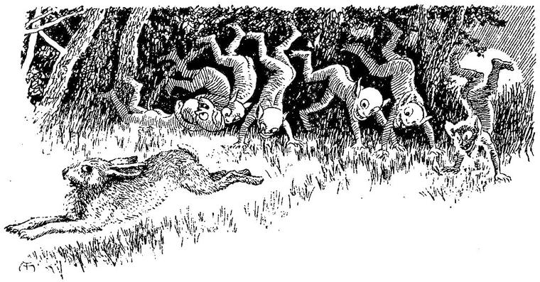
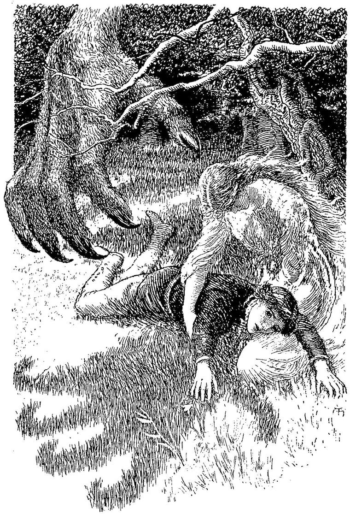

“When bale is att hyest, boote is nyest.”
Ballad of Sir Aldingar.
By this time, my hostess was quite anxious that I should be gone. So, with warm thanks for their hospitality, I took my leave, and went my way through the little garden towards the forest. Some of the garden flowers had wandered into the wood, and were growing here and there along the path, but the trees soon became too thick and shadowy for them. I particularly noticed some tall lilies, which grew on both sides of the way, with large dazzlingly white flowers, set off by the universal green. It was now dark enough for me to see that every flower was shining with a light of its own. Indeed it was by this light that I saw them, an internal, peculiar light, proceeding from each, and not reflected from a common source of light as in the daytime. This light sufficed only for the plant itself, and was not strong enough to cast any but the faintest shadows around it, or to illuminate any of the neighbouring objects with other than the faintest tinge of its own individual hue. From the lilies above mentioned, from the campanulas, from the foxgloves, and every bell-shaped flower, curious little figures shot up their heads, peeped at me, and drew back. They seemed to inhabit them, as snails their shells; but I was sure some of them were intruders, and belonged to the gnomes or goblin-fairies, who inhabit the ground and earthy creeping plants. From the cups of Arum lilies, creatures with great heads and grotesque faces shot up like Jack-in-the-box, and made grimaces at me; or rose slowly and slily over the edge of the cup, and spouted water at me, slipping suddenly back, like those little soldier-crabs that inhabit the shells of sea-snails. Passing a row of tall thistles, I saw them crowded with little faces, which peeped every one from behind its flower, and drew back as quickly; and I heard them saying to each other, evidently intending me to hear, but the speaker always hiding behind his tuft, when I looked in his direction, “Look at him! Look at him! He has begun a story without a beginning, and it will never have any end. He! he! he! Look at him!”
But as I went further into the wood, these sights and sounds became fewer, giving way to others of a different character. A little forest of wild hyacinths was alive with exquisite creatures, who stood nearly motionless, with drooping necks, holding each by the stem of her flower, and swaying gently with it, whenever a low breath of wind swung the crowded floral belfry. In like manner, though differing of course in form and meaning, stood a group of harebells, like little angels waiting, ready, till they were wanted to go on some yet unknown message. In darker nooks, by the mossy roots of the trees, or in little tufts of grass, each dwelling in a globe of its own green light, weaving a network of grass and its shadows, glowed the glowworms.
They were just like the glowworms of our own land, for they are fairies everywhere; worms in the day, and glowworms at night, when their own can appear, and they can be themselves to others as well as themselves. But they had their enemies here. For I saw great strong-armed beetles, hurrying about with most unwieldy haste, awkward as elephant-calves, looking apparently for glowworms; for the moment a beetle espied one, through what to it was a forest of grass, or an underwood of moss, it pounced upon it, and bore it away, in spite of its feeble resistance. Wondering what their object could be, I watched one of the beetles, and then I discovered a thing I could not account for. But it is no use trying to account for things in Fairy Land; and one who travels there soon learns to forget the very idea of doing so, and takes everything as it comes; like a child, who, being in a chronic condition of wonder, is surprised at nothing. What I saw was this. Everywhere, here and there over the ground, lay little, dark-looking lumps of something more like earth than anything else, and about the size of a chestnut. The beetles hunted in couples for these; and having found one, one of them stayed to watch it, while the other hurried to find a glowworm. By signals, I presume, between them, the latter soon found his companion again: they then took the glowworm and held its luminous tail to the dark earthly pellet; when lo, it shot up into the air like a sky-rocket, seldom, however, reaching the height of the highest tree. Just like a rocket too, it burst in the air, and fell in a shower of the most gorgeously coloured sparks of every variety of hue; golden and red, and purple and green, and blue and rosy fires crossed and inter-crossed each other, beneath the shadowy heads, and between the columnar stems of the forest trees. They never used the same glowworm twice, I observed; but let him go, apparently uninjured by the use they had made of him.
In other parts, the whole of the immediately surrounding foliage was illuminated by the interwoven dances in the air of splendidly coloured fire-flies, which sped hither and thither, turned, twisted, crossed, and recrossed, entwining every complexity of intervolved motion. Here and there, whole mighty trees glowed with an emitted phosphorescent light. You could trace the very course of the great roots in the earth by the faint light that came through; and every twig, and every vein on every leaf was a streak of pale fire.
All this time, as I went through the wood, I was haunted with the feeling that other shapes, more like my own size and mien, were moving about at a little distance on all sides of me. But as yet I could discern none of them, although the moon was high enough to send a great many of her rays down between the trees, and these rays were unusually bright, and sight-giving, notwithstanding she was only a half-moon. I constantly imagined, however, that forms were visible in all directions except that to which my gaze was turned; and that they only became invisible, or resolved themselves into other woodland shapes, the moment my looks were directed towards them. However this may have been, except for this feeling of presence, the woods seemed utterly bare of anything like human companionship, although my glance often fell on some object which I fancied to be a human form; for I soon found that I was quite deceived; as, the moment I fixed my regard on it, it showed plainly that it was a bush, or a tree, or a rock.
Soon a vague sense of discomfort possessed me. With variations of relief, this gradually increased; as if some evil thing were wandering about in my neighbourhood, sometimes nearer and sometimes further off, but still approaching. The feeling continued and deepened, until all my pleasure in the shows of various kinds that everywhere betokened the presence of the merry fairies vanished by degrees, and left me full of anxiety and fear, which I was unable to associate with any definite object whatever. At length the thought crossed my mind with horror: “Can it be possible that the Ash is looking for me? or that, in his nightly wanderings, his path is gradually verging towards mine?” I comforted myself, however, by remembering that he had started quite in another direction; one that would lead him, if he kept it, far apart from me; especially as, for the last two or three hours, I had been diligently journeying eastward. I kept on my way, therefore, striving by direct effort of the will against the encroaching fear; and to this end occupying my mind, as much as I could, with other thoughts. I was so far successful that, although I was conscious, if I yielded for a moment, I should be almost overwhelmed with horror, I was yet able to walk right on for an hour or more. What I feared I could not tell. Indeed, I was left in a state of the vaguest uncertainty as regarded the nature of my enemy, and knew not the mode or object of his attacks; for, somehow or other, none of my questions had succeeded in drawing a definite answer from the dame in the cottage. How then to defend myself I knew not; nor even by what sign I might with certainty recognise the presence of my foe; for as yet this vague though powerful fear was all the indication of danger I had. To add to my distress, the clouds in the west had risen nearly to the top of the skies, and they and the moon were travelling slowly towards each other. Indeed, some of their advanced guard had already met her, and she had begun to wade through a filmy vapour that gradually deepened.
At length she was for a moment almost entirely obscured. When she shone out again, with a brilliancy increased by the contrast, I saw plainly on the path before me—from around which at this spot the trees receded, leaving a small space of green sward—the shadow of a large hand, with knotty joints and protuberances here and there. Especially I remarked, even in the midst of my fear, the bulbous points of the fingers. I looked hurriedly all around, but could see nothing from which such a shadow should fall. Now, however, that I had a direction, however undetermined, in which to project my apprehension, the very sense of danger and need of action overcame that stifling which is the worst property of fear. I reflected in a moment, that if this were indeed a shadow, it was useless to look for the object that cast it in any other direction than between the shadow and the moon. I looked, and peered, and intensified my vision, all to no purpose. I could see nothing of that kind, not even an ash-tree in the neighbourhood. Still the shadow remained; not steady, but moving to and fro, and once I saw the fingers close, and grind themselves close, like the claws of a wild animal, as if in uncontrollable longing for some anticipated prey. There seemed but one mode left of discovering the substance of this shadow. I went forward boldly, though with an inward shudder which I would not heed, to the spot where the shadow lay, threw myself on the ground, laid my head within the form of the hand, and turned my eyes towards the moon. Good heavens! what did I see? I wonder that ever I arose, and that the very shadow of the hand did not hold me where I lay until fear had frozen my brain. I saw the strangest figure; vague, shadowy, almost transparent, in the central parts, and gradually deepening in substance towards the outside, until it ended in extremities capable of casting such a shadow as fell from the hand, through the awful fingers of which I now saw the moon. The hand was uplifted in the attitude of a paw about to strike its prey. But the face, which throbbed with fluctuating and pulsatory visibility—not from changes in the light it reflected, but from changes in its own conditions of reflecting power, the alterations being from within, not from without—it was horrible. I do not know how to describe it. It caused a new sensation. Just as one cannot translate a horrible odour, or a ghastly pain, or a fearful sound, into words, so I cannot describe this new form of awful hideousness. I can only try to describe something that is not it, but seems somewhat parallel to it; or at least is suggested by it. It reminded me of what I had heard of vampires; for the face resembled that of a corpse more than anything else I can think of; especially when I can conceive such a face in motion, but not suggesting any life as the source of the motion. The features were rather handsome than otherwise, except the mouth, which had scarcely a curve in it. The lips were of equal thickness; but the thickness was not at all remarkable, even although they looked slightly swollen. They seemed fixedly open, but were not wide apart. Of course I did not remark these lineaments at the time: I was too horrified for that. I noted them afterwards, when the form returned on my inward sight with a vividness too intense to admit of my doubting the accuracy of the reflex. But the most awful of the features were the eyes. These were alive, yet not with life.
They seemed lighted up with an infinite greed. A gnawing voracity, which devoured the devourer, seemed to be the indwelling and propelling power of the whole ghostly apparition. I lay for a few moments simply imbruted with terror; when another cloud, obscuring the moon, delivered me from the immediately paralysing effects of the presence to the vision of the object of horror, while it added the force of imagination to the power of fear within me; inasmuch as, knowing far worse cause for apprehension than before, I remained equally ignorant from what I had to defend myself, or how to take any precautions: he might be upon me in the darkness any moment. I sprang to my feet, and sped I knew not whither, only away from the spectre. I thought no longer of the path, and often narrowly escaped dashing myself against a tree, in my headlong flight of fear.
Great drops of rain began to patter on the leaves. Thunder began to mutter, then growl in the distance. I ran on. The rain fell heavier. At length the thick leaves could hold it up no longer; and, like a second firmament, they poured their torrents on the earth. I was soon drenched, but that was nothing. I came to a small swollen stream that rushed through the woods. I had a vague hope that if I crossed this stream, I should be in safety from my pursuer; but I soon found that my hope was as false as it was vague. I dashed across the stream, ascended a rising ground, and reached a more open space, where stood only great trees. Through them I directed my way, holding eastward as nearly as I could guess, but not at all certain that I was not moving in an opposite direction. My mind was just reviving a little from its extreme terror, when, suddenly, a flash of lightning, or rather a cataract of successive flashes, behind me, seemed to throw on the ground in front of me, but far more faintly than before, from the extent of the source of the light, the shadow of the same horrible hand. I sprang forward, stung to yet wilder speed; but had not run many steps before my foot slipped, and, vainly attempting to recover myself, I fell at the foot of one of the large trees. Half-stunned, I yet raised myself, and almost involuntarily looked back. All I saw was the hand within three feet of my face. But, at the same moment, I felt two large soft arms thrown round me from behind; and a voice like a woman’s said: “Do not fear the goblin; he dares not hurt you now.” With that, the hand was suddenly withdrawn as from a fire, and disappeared in the darkness and the rain. Overcome with the mingling of terror and joy, I lay for some time almost insensible. The first thing I remember is the sound of a voice above me, full and low, and strangely reminding me of the sound of a gentle wind amidst the leaves of a great tree. It murmured over and over again: “I may love him, I may love him; for he is a man, and I am only a beech-tree.” I found I was seated on the ground, leaning against a human form, and supported still by the arms around me, which I knew to be those of a woman who must be rather above the human size, and largely proportioned. I turned my head, but without moving otherwise, for I feared lest the arms should untwine themselves; and clear, somewhat mournful eyes met mine. At least that is how they impressed me; but I could see very little of colour or outline as we sat in the dark and rainy shadow of the tree. The face seemed very lovely, and solemn from its stillness; with the aspect of one who is quite content, but waiting for something. I saw my conjecture from her arms was correct: she was above the human scale throughout, but not greatly.

“Why do you call yourself a beech-tree?” I said.
“Because I am one,” she replied, in the same low, musical, murmuring voice.
“You are a woman,” I returned.
“Do you think so? Am I very like a woman then?”
“You are a very beautiful woman. Is it possible you should not know it?”
“I am very glad you think so. I fancy I feel like a woman sometimes. I do so to-night—and always when the rain drips from my hair. For there is an old prophecy in our woods that one day we shall all be men and women like you. Do you know anything about it in your region? Shall I be very happy when I am a woman? I fear not, for it is always in nights like these that I feel like one. But I long to be a woman for all that.”
I had let her talk on, for her voice was like a solution of all musical sounds. I now told her that I could hardly say whether women were happy or not. I knew one who had not been happy; and for my part, I had often longed for Fairy Land, as she now longed for the world of men. But then neither of us had lived long, and perhaps people grew happier as they grew older. Only I doubted it.
I could not help sighing. She felt the sigh, for her arms were still round me. She asked me how old I was.
“Twenty-one,” said I.
“Why, you baby!” said she, and kissed me with the sweetest kiss of winds and odours. There was a cool faithfulness in the kiss that revived my heart wonderfully. I felt that I feared the dreadful Ash no more.
“What did the horrible Ash want with me?” I said.
“I am not quite sure, but I think he wants to bury you at the foot of his tree. But he shall not touch you, my child.”
“Are all the ash-trees as dreadful as he?”
“Oh, no. They are all disagreeable selfish creatures—(what horrid men they will make, if it be true!)—but this one has a hole in his heart that nobody knows of but one or two; and he is always trying to fill it up, but he cannot. That must be what he wanted you for. I wonder if he will ever be a man. If he is, I hope they will kill him.”
“How kind of you to save me from him!”
“I will take care that he shall not come near you again. But there are some in the wood more like me, from whom, alas! I cannot protect you. Only if you see any of them very beautiful, try to walk round them.”
“What then?”
“I cannot tell you more. But now I must tie some of my hair about you, and then the Ash will not touch you. Here, cut some off. You men have strange cutting things about you.”
She shook her long hair loose over me, never moving her arms.
“I cannot cut your beautiful hair. It would be a shame.”
“Not cut my hair! It will have grown long enough before any is wanted again in this wild forest. Perhaps it may never be of any use again—not till I am a woman.” And she sighed.
As gently as I could, I cut with a knife a long tress of flowing, dark hair, she hanging her beautiful head over me. When I had finished, she shuddered and breathed deep, as one does when an acute pain, steadfastly endured without sign of suffering, is at length relaxed. She then took the hair and tied it round me, singing a strange, sweet song, which I could not understand, but which left in me a feeling like this—
I see thee never more;
But love, and help, and pain, beautiful one,
Have made thee mine, till all my years are done.”
I cannot put more of it into words. She closed her arms about me again, and went on singing. The rain in the leaves, and a light wind that had arisen, kept her song company. I was wrapt in a trance of still delight. It told me the secret of the woods, and the flowers, and the birds. At one time I felt as if I was wandering in childhood through sunny spring forests, over carpets of primroses, anemones, and little white starry things—I had almost said creatures, and finding new wonderful flowers at every turn. At another, I lay half dreaming in the hot summer noon, with a book of old tales beside me, beneath a great beech; or, in autumn, grew sad because I trod on the leaves that had sheltered me, and received their last blessing in the sweet odours of decay; or, in a winter evening, frozen still, looked up, as I went home to a warm fireside, through the netted boughs and twigs to the cold, snowy moon, with her opal zone around her. At last I had fallen asleep; for I know nothing more that passed till I found myself lying under a superb beech-tree, in the clear light of the morning, just before sunrise. Around me was a girdle of fresh beech-leaves. Alas! I brought nothing with me out of Fairy Land, but memories—memories. The great boughs of the beech hung drooping around me. At my head rose its smooth stem, with its great sweeps of curving surface that swelled like undeveloped limbs. The leaves and branches above kept on the song which had sung me asleep; only now, to my mind, it sounded like a farewell and a speedwell. I sat a long time, unwilling to go; but my unfinished story urged me on. I must act and wander. With the sun well risen, I rose, and put my arms as far as they would reach around the beech-tree, and kissed it, and said good-bye. A trembling went through the leaves; a few of the last drops of the night’s rain fell from off them at my feet; and as I walked slowly away, I seemed to hear in a whisper once more the words: “I may love him, I may love him; for he is a man, and I am only a beech-tree.”